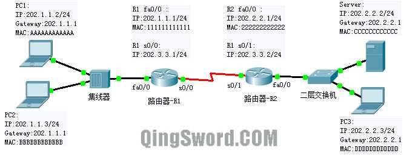
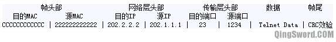

[CCNA图文笔记]-5-数据封装与解封装
引言
这篇文章结合一个Telnet远程登录的实例讲解数据包封装和解封装以及数据包在网络中的传输过程。
文章目录
0×1.Telnet远程登录实例
设备IP如下图，PC1和PC2连接在一个集线器上，集线器连接在路由器R1上，R1和R2通过串行线路相连，一台二层交换机连接在R2上，它的上面连接着PC1需要远程登录的服务器(Server)，以及另外一台PC3：
PC1使用Telnet登录服务器具体步骤如下：
1）PC1开始封装数据包，首先它使用本地网络号比较要去往的目的地IP（202.2.2.2）发现此IP不在本地网络(202.1.1.0)中，PC1知道要发往其他网段的数据先要发给网关，也就是路由器R1的fa0/0接口（202.1.1.1），PC1首先在本地ARP缓存中查找202.1.1.1的MAC地址，如果找到，就用它封装，如果没有找到，就发送ARP查询，再利用查询到的MAC进行封装。
2）PC1将数据传至到传输层进行分段（Segment）处理，因为Telnet使用的是TCP协议，所以PC1使用本地一个大于1024的任意端口（这里假设是1234）作为源端口，目的端口是23，这两个端口被添加到传输层的协议数据单元中；传输层封装好后，数据被传输到网络层，网络层在数据头部添加源IP（202.1.1.2），目的IP（202.2.2.2）；网络层封装好后，数据被传输到数据链路层，在局域网中这一层主要是在数据头部添加源MAC（AAAAAAAAAAAA）和目的MAC (111111111111)，然后在数据尾部添加一个CRC效验，封装好后的帧如下图：
看到这里可能大家感觉很奇怪，为什么目的MAC是网关的MAC而不是Server的MAC，因为MAC只是用于局域网内寻址，发往其他网段的数据都要先经过网关，假设封装的MAC是Server的MAC，数据被传送到路由器R1后，R1检查MAC地址，发现不是发往本路由的，它会直接丢弃这个数据，那样PC1就永远别想和Server通信成功了；
3）PC1发送的数据到达集线器，集线器将数据信号放大，并将它从除接收端口以外的其他接口发出，PC2和R1都会收到这个数据，PC2收到后查看目的MAC地址不是本机，PC2放弃处理，丢弃数据；
4）路由器R1发现目的MAC地址是本机fa0/0接口的MAC地址，它解封装这个帧，上传到网络层，在网络层R1看到这个数据包的目的地址是202.2.2.2，并不是发给本路由的，需要进行转发。R1查看本地路由表，发现需要将这个数据从s0/0接口发出，但是此时R1并不能直接将数据发出，因为数据在被解封装到网络层后还需要进行再封装才能从物理层发出；因为R1和R2之间是串行线路，串行线路不同于局域网，不是使用MAC通信，串行线路的通信协议可能是PPP或者是HDLC（这里假设是PPP协议），并且一端发出另一端一定能收到，所以在数据发出去之前，在R1的数据链路层给这个数据包封装PPP协议头部，然后从s0/0发出，数据帧格式如下：
5）路由R2收到了这个数据帧，上传至数据链路层处理，数据链路层去掉PPP封装，上传至网络层处理；网络层发现这个数据包的目的地址并非本路由，但是目的连接在本路由的以太网接口上，这个时候如果R2有Server的MAC地址，就直接用Server的MAC地址封装，否则它先发送ARP查询，收到回应后再封装，封装后的数据帧从fa0/0发出，如下:

6）R2发出的数据帧到达交换机，交换机的MAC缓存表中如果存在Server的MAC和对应端口，它将直接将数据发给Server，如果不知道Server的MAC则会发送ARP查询（由此例可见ARP在局域网中多么重要），然后再转发；
7）Server收到了这个数据帧，它将数据帧上传到数据链路层，发现是本机的MAC，然后再上传到网络层，发现是本机的IP，之后再上传到传输层，发现是访问本机23端口，最后数据被传输到应用层；
8）Server对PC1的应答和上面的步骤刚好相反，目的IP、源IP以及目的端口、源端口位置对调，发回的数据帧格式如下：
这就是一个完整的互联网Telnet数据包传输以及封装解封装过程；从这个过程中可以看出，数据流在中间设备上执行的是OSI模型下三层的操作，物理层设备（集线器）不改变帧格式，广播式转发；数据链路层设备（二层交换机）也不改变帧格式，但可根据帧的目的地址进行转发；网络层的设备改变帧格式，要进行帧的解封装再封装，但不改变数据包中源和目的IP地址（会改变数据包中的一些字段，比如TTL字段会减1）。